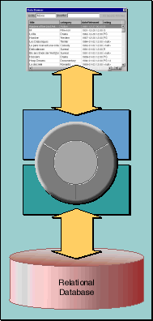

Table of Contents
Table of Contents  Next Section
Table of Contents
Next Section
Table of Contents  Previous Section
Previous Section
If not in the business objects, then where does this knowledge go? It's handled by Enterprise Objects Framework as shown in Figure 1.

Figure 1. The Enterprise Objects Framework Approach
objects-to-interface mapping so they are encapsulated from the user interface. This approach enables you to create libraries of enterprise objects that can be used in as many applications as you need, with any user interface, and with any database server. You're able to concentrate on coding the logic of your business while the Framework takes care of the rest.
Table of Contents Next Section